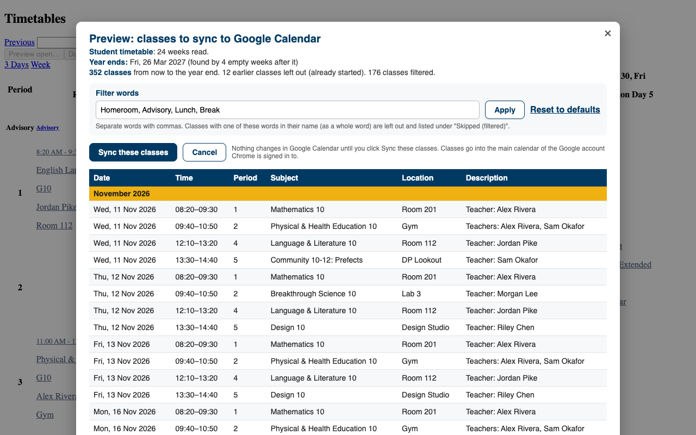

Your ManageBac timetable, in your Google Calendar
Timetable Sync for ManageBac is a free Chrome extension for students and teachers. One click copies your classes from ManageBac into your own Google Calendar, and keeps them up to date when rooms, times or classes change.
Add to ChromeFor school IT teams

How it works
- Install the extension from the Chrome Web Store, in Chrome signed in to your school Google account.
- Open your timetable on ManageBac. A Sync to Google Calendar button appears next to ManageBac's own buttons.
- The first time, Google asks you to allow the extension to add events to your calendar.
- Check the preview and click Sync these classes. Your classes appear in Google Calendar, from today to the end of the school year.
Settings (words to skip such as "Lunch", event colour, time zone, end of the school year) and Remove all are in the extension's toolbar button. Prefer not to sign in to Google? Download .ics saves your timetable as a calendar file you can import anywhere.
Private by design
Everything happens on your own computer. There is no server and no account to create. Your timetable goes straight from ManageBac to your Google Calendar and nowhere else. Read the privacy policy.
Can't sign in?
If the extension says your school's Google admin hasn't allowed it, or Google says "Service has been disabled for this account", your school restricts third-party apps. Send your IT team the page For school IT teams: it takes them a couple of minutes to allow it. Until then, Download .ics still works.
Help
Use Report a problem in the extension, or email hello@qurious.im.